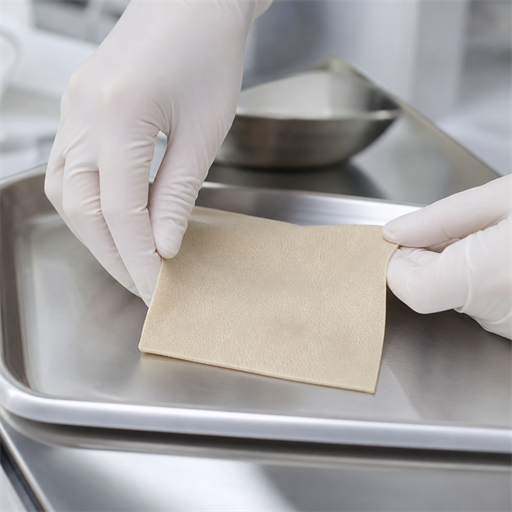
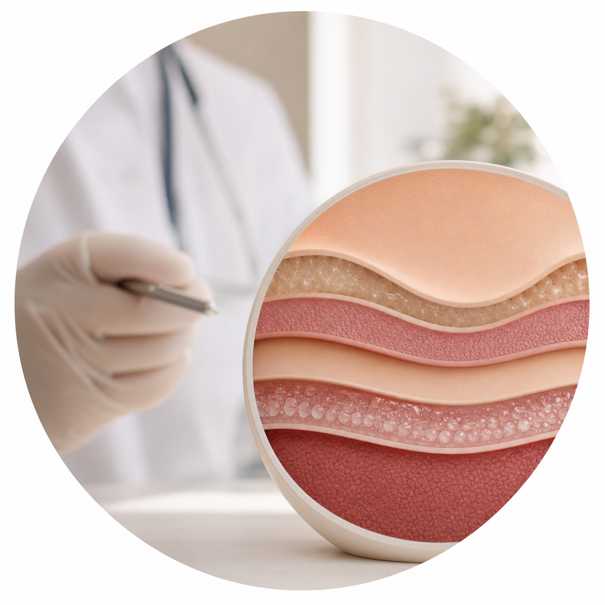

대체진피 음경확대
고정밀 인체적합 재질로 굵기 영구 확대
Men's Enlargement Clinic
굵기와 형태가 고민되는 경우, 수술·비수술 방법을 개인 상태와 목표에 맞춰 선택합니다.
Volume Change
굵기가 부족하거나 불균형한 경우, 비수술·수술 방법을 개인 상태에 맞춰 선택합니다.
굿맨비뇨기과는 상담과 진단을 바탕으로 회복 기간, 지속 효과, 원하는 변화 정도를 함께 고려해 치료 방향을 제안합니다.

Recommended For
움츠리고 있는 남성의 자신감 회복!
Surgical Or Non-Surgical
| 구분 | 수술적 확대 | 비수술적 확대 |
|---|---|---|
| 효과 지속기간 | 반영구 | 6개월~2년 |
| 시술 시간 | 1시간 이내 | 30~40분 |
| 회복 기간 | 10~14일 | 2~3일 |
| 통증 정도 | 낮음~중간 | 낮음 |
| 적합 대상 | 장기적인 효과 | 빠른 회복 |
After Care
수술 후 1주일 정도 처방받은 항생제 복용을 잘 지켜주셔야 합니다.
수술 부위에 물이 묻지 않도록 주의하고, 상처 부위를 제외한 주변은 물을 묻힌 수건으로 닦아내는 것을 권장합니다.
필러나 자가지방을 이용한 확대술의 경우 이식한 재료의 모양이 틀어지지 않도록 성기가 곧은 형태로 유지될 수 있도록 신경써주셔야 합니다.
Why Good Man?
정확한 진단, 검증된 재료, 개인별 상담을 바탕으로
자연스러운 결과와 안정적인 회복을 함께 고려합니다.